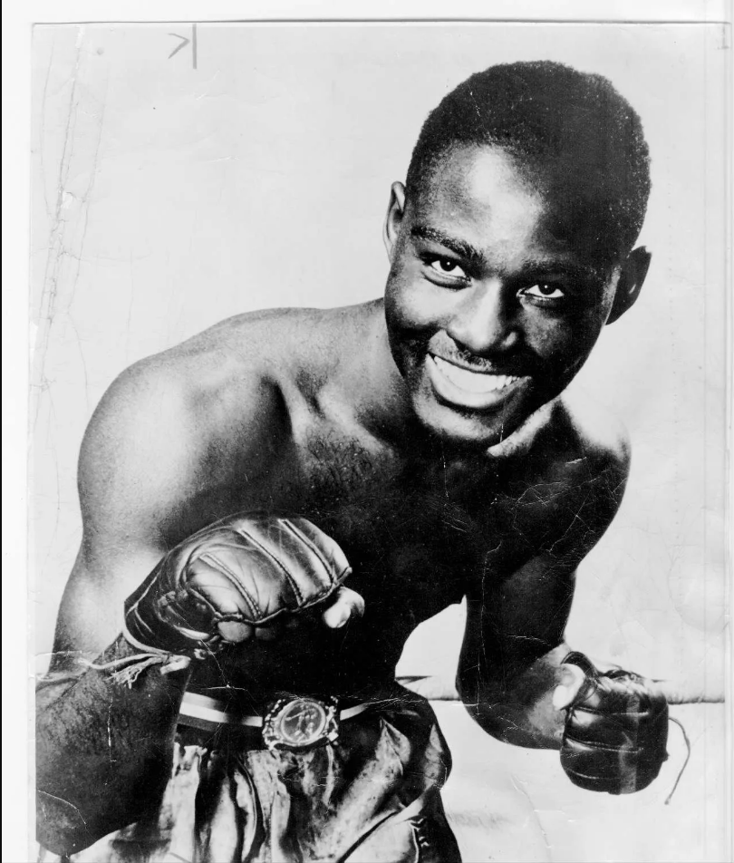
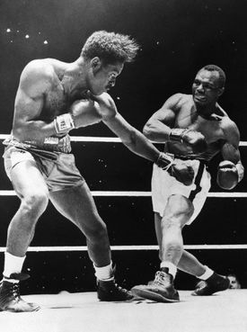

Ezzard Charles, born in 1921 in Cincinnati, Ohio, began his professional boxing career in 1940 at the age of 19. A talented and skilled fighter, Charles initially fought in the light heavyweight division before eventually moving to heavyweight. Known for his sharp technical boxing and smooth footwork, Charles quickly gained a reputation for being a smart and methodical fighter. His debut marked the beginning of a long and illustrious career in the ring.

Best Fights: Defining Moments
1949 - Ezzard Charles vs. Jersey Joe Walcott
One of Charles' defining moments came when he faced Jersey Joe Walcott in 1949. In a fight for the World Light Heavyweight Championship, Charles' combination of technical skill and ring IQ earned him a decisive victory, solidifying his reputation as one of the best in the division.

1950 - Ezzard Charles vs. Lou Ambers
Another pivotal match in Charles' career came when he fought Lou Ambers. Despite Ambers' own reputation as a tough competitor, Charles showcased his incredible stamina and ring generalship, outboxing Ambers in a thrilling contest to retain his light heavyweight title.
Achievements: A Boxing Legend
Ezzard Charles was a two-time World Light Heavyweight Champion and also held the World Heavyweight title. Known for his smooth boxing style and relentless determination, Charles became a well-respected fighter across two weight classes. He fought some of the best in the sport, including Rocky Marciano, and earned a reputation for his versatility and skill.
Two-time World Light Heavyweight Champion
World Heavyweight Champion
Named Fighter of the Year in 1949 by Ring Magazine
One of the greatest pound-for-pound boxers of all time
Struggles: Challenges Along the Way
Despite his success, Charles faced many struggles throughout his career. His most notable challenge came in 1954 when he fought the undefeated Rocky Marciano for the World Heavyweight Championship. Though Charles was a highly skilled and experienced fighter, Marciano's relentless power and durability proved too much for him. Charles also faced the difficulties of competing in two divisions and maintaining his competitive edge against top-tier talent throughout his career.